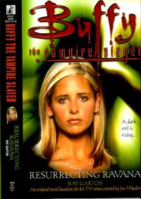

Richard Lee Byers
Jim Butcher
Laurell K Hamilton
Janeen O'Kerry
Karen Rose Cercone
Steven Lee Climer
Julia Ecklar
Diana G. Gallagher
Ray Garton
Gerry Hausman
Brian Lumley
Michael A. Stackpole
Dan Stark
David Niall Wilson
|
Biography
Ray Garton is the author of several books, including horror novels such as LIVE GIRLS (which has a movie in the works), CRUCIFAX, E4 AUTUMN, and THE FOLKS; thrillers like TRADE SECRETS and SHACKLED; and numerous short stories and novellas. He's also written a number of movie and television tie-ins for young readers. He lives with his wife, Dawn, in California.
Sample of Ray's work:
|  |
RESURRECTION RAVANA
ISBN: 0-671-02636-4
RAISING THE DEAD
With midterms looming, the students at Sunnydale High are predictably
stressed-out. Even super-student Willow is feeling the pressure to
succeed. And when her usual study buddies - Buffy, Xander and Oz - decide
they don't need her tutorial sessions, Willow wonders if she's really what
they don't need. But her hurt feelings don't explain her sudden antagonism
toward Buffy - or the strange dreams they've both been having.
As tensions in the school escalate into brutal acts of violence - and the
perpetrators turn up horribly mutilated - Buffy and the gang search for a
supernatural source. The evidence indicates that someone is attempting to
resurrect a powerful Hindu demon. Willow's new confidante, guidance
counselor Promila Daruwalla, becomes the prime suspect…until Giles runs
into an old "friend" who is always causing trouble. It will take all of
the Slayer's resources…and the help of all her friends…to find the culprit
and destroy the key to the demon's resurrection.
|
Bibliography
Novels
- Seductions (1984)
- Darklings (1985)
- Invaders from Mars (1986)
- Live Girls (1987)
- Crucifax autumn (1988)
- Crucifax (1989)
- Nightmare on Elm Street Part 4 (1989) as Joseph Locke
- Nightmare on Elm Street Part 5 (1989) as Joseph Locke
- Warlock (1989)
- Lot Lizards (1990)
- Trade Secrets (1990)
- Kill the Teacher’s Pet (1991) as Joseph Locke
- New Neighbor (1991)
- Dark Channel (1992)
- Kiss of Death (1992) as Joseph Locke
- Petrified (1992) as Joseph Locke
- Game Over (1993) as Joseph Locke
- The Teacher (1993) as Joseph Locke
- 1-900-Killer (1994) as Joseph Locke
- Vengeance (1994) as Joseph Locke
- Biofire (1996)
- Shackled (1996)
- Good Burger (1997) as Joseph Locke
- 411 (1998)
- Can’t Hardly Wait (1998)
- The Folks (2001)
- Sex and Violence in Hollywood (2001)
- Zombie Love (2003)
- Scissors (2004)
- Night Life (2005)
- The Loveliest Dead (2005)
- Ravenous (2008, forthcoming)
Series
- Blood and Lace (writing as Joseph Locke)
- Vampire Heart (1994)
- Deadly Relations (1994)
Collections
- Methods of Madness (1990)
- Pieces of Hate (1995)
- The Girl in the Basement and Other Stories (2004)
- 'Nids and Other Stories (2005)
- Slivers of Bone (2007, forthcoming)
Series Contributions
- The Secret World of Alex Mack
- Hocus Pocus (1997) as Joseph Locke
- Lights, Camera, Action! (1998)
- Sabrina, the Teenage Witch
- Been There, Done That (1997) as Joseph Locke
- The Troll Bride (1998) as Joseph Locke
- All That Glitters (1998)
- Buffy the Vampire Slayer
- Resurrecting Ravana (1999)
Short Stories
- Active Member (1987)
- Monsters (1988)
- Sinema (1988)
- Punishments (1989)
- Dr Krusadian's Method (1990)
- Fat (1990)
- The Other Man (1990)
- The Picture of Health (1990)
- Shock Radio (1990)
- Something Kinky (1990)
- Pieces (1992)
- Screams at the Gateway to Fame (1996)
- Hair of the Dog (1997)
- Haunted in the Head (1997)
- From Eight to Nine O' Clock (2007)
Non Fiction
- In a Dark Place: The Story of a True Haunting (1992)
CONTACT INFO
http://www.bitingdogpress.com/Bitingdogpub/garton/home.htm |